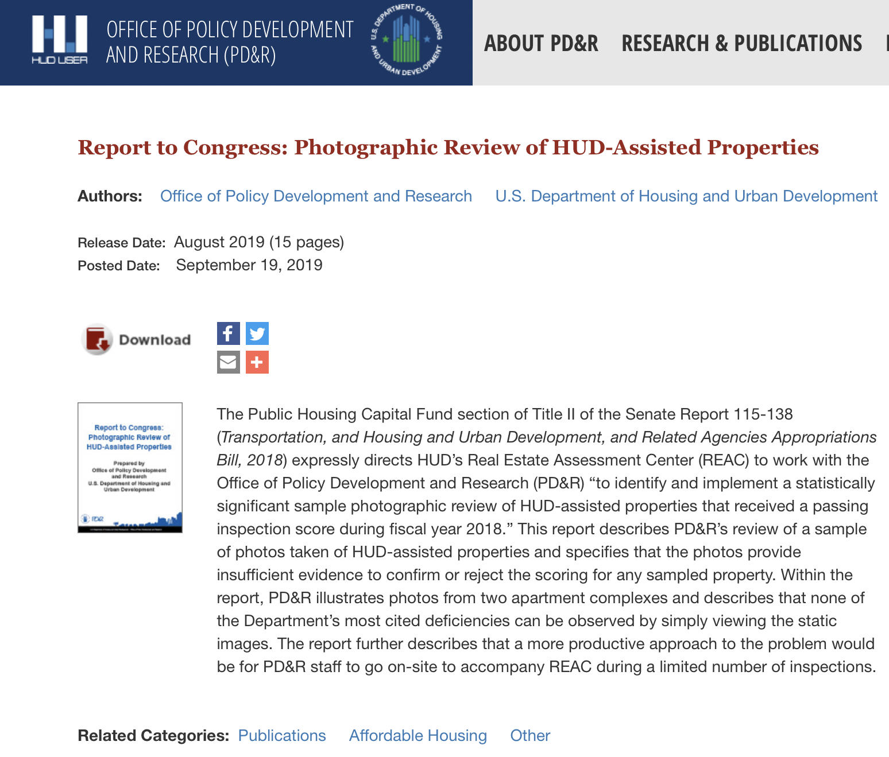
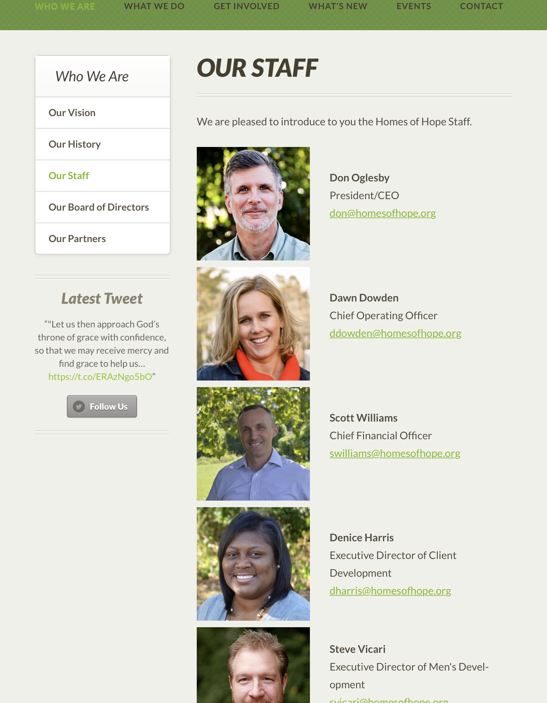
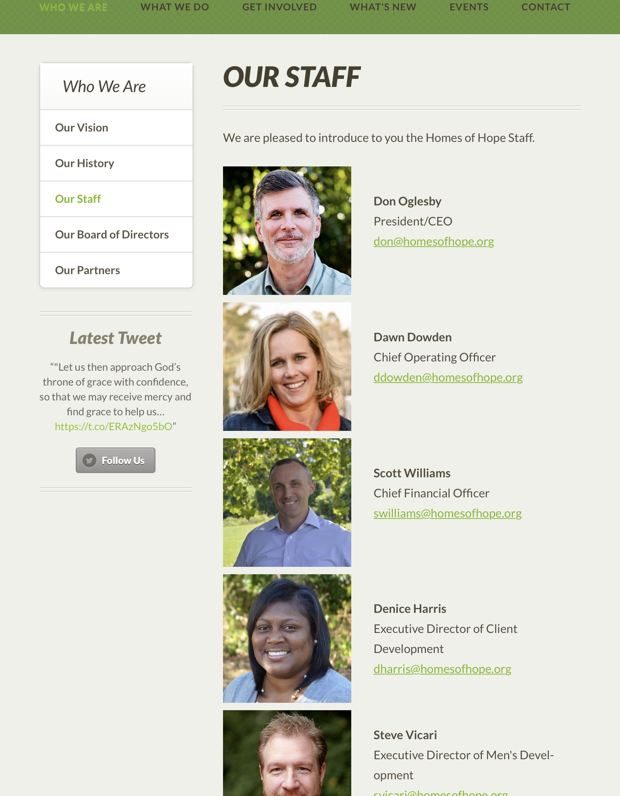

Primary Research
Screenshots of Non Profits Website and Marketing Collateral
This logo features two colors and a simple illustration of a house with a person holding it up. Overall, this is a very simple logo and it also shows the Non Profits color scheme.


Secondary Research
Screenshots of Secondary Research
The most recent news in my clients field pertains to the current situation of homeless people in the Upstate South Carolina. It states that there are 3,502 homeless people in the upstate. Overall, this article add very useful insight to the homeless situation in the Upstate of South Carolina.

The cultural innovation that happened for my client was that there is new legislature that forces for affordable homes to be up to sanitation standards. In the past, home would deteriorate and accumulate unaddressed health risks, which posed threats to the individuals living in those homes. This legislation will require more in-depth photography so that appraisers can access the condition of the home.
Here I chose the competitor of United Housing Connections which is Homes of Hope, who is also grant funded and facilitates cheaper homes for the homeless. The Homes of Hope Website was much easier to navigate, had a better sense of design, and overall had less issues than United Housing Connections. Their 2018 annual reports had beautiful typeface pairings and effective overall design continuity.

 



The market data I found is in both websites 2018 annual reports. I listed several screenshots comparing the pages of the reports, and there are many major differences conceding content layout and design choices. The data of United Housing Connections said that they had had a net loss of $355, 259. Homes of Hopes net income $2,060,706. Needless to say, Homes of Hope is excelling financially while United Housing Connections is suffering a loss. To solve the design problem, I believe that it will be very important for United Housing Connections to learn from Homes of Hope not just on the basis of their website design, but also in how they conduct business.